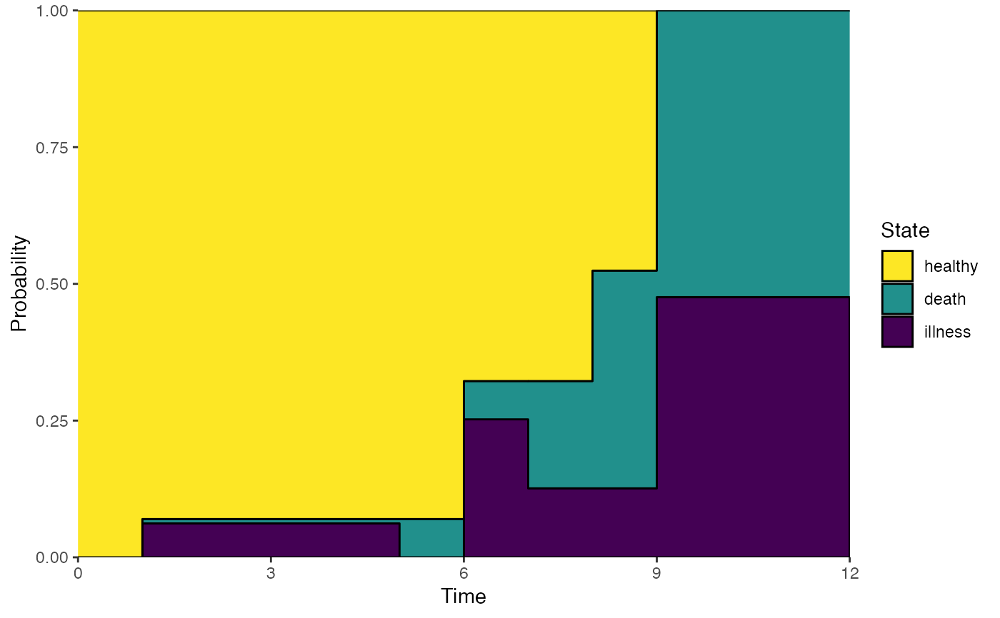
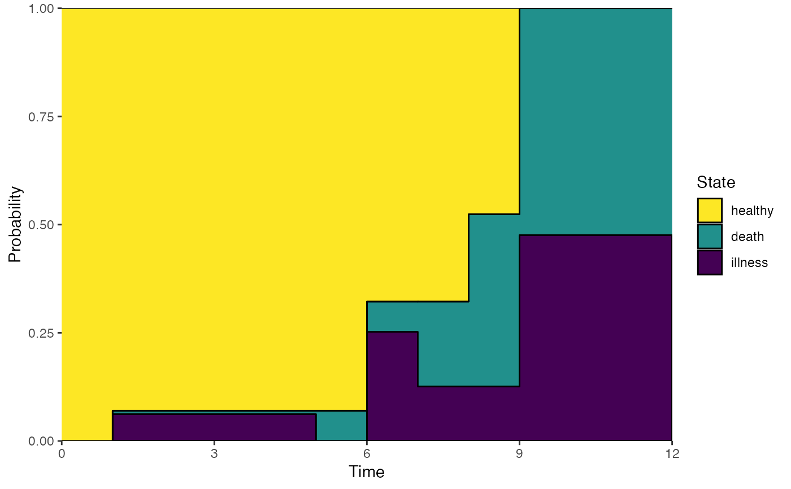

Plot method for an object of class 'probtrans'. It plots the transition
probabilities as estimated by probtrans.
Usage
# S3 method for class 'probtrans'
plot(
x,
from = 1,
type = c("filled", "single", "separate", "stacked"),
ord,
cols,
xlab = "Time",
ylab = "Probability",
xlim,
ylim,
lwd,
lty,
cex,
legend,
legend.pos = "right",
bty = "n",
xaxs = "i",
yaxs = "i",
use.ggplot = FALSE,
conf.int = 0.95,
conf.type = c("log", "plain", "none"),
label,
...
)Arguments
- x
Object of class 'probtrans', containing estimated transition probabilities
- from
The starting state from which the probabilities are used to plot
- type
One of
"stacked"(default),"filled","single"or"separate"; in case of"stacked", the transition probabilities are stacked and the distance between two adjacent curves indicates the probability, this is also true for"filled", but the space between adjacent curves are filled, in case of"single", the probabilities are shown as different curves in a single plot, in case of"separate", separate plots are shown for the estimated transition probabilities- ord
A vector of length equal to the number of states, specifying the order of plotting in case type=
"stacked"or"filled"- cols
A vector specifying colors for the different transitions; default is a palette from green to red, when type=
"filled"(reordered according toord, and 1 (black), otherwise- xlab
A title for the x-axis; default is
"Time"- ylab
A title for the y-axis; default is
"Probability"- xlim
The x limits of the plot(s), default is range of time
- ylim
The y limits of the plot(s); if ylim is specified for type="separate", then all plots use the same ylim for y limits
- lwd
The line width, see
par; default is 1- lty
The line type, see
par; default is 1- cex
Character size, used in text; only used when type=
"stacked"or"filled"- legend
Character vector of length equal to the number of transitions, to be used in a legend; if missing, numbers will be used; this and the legend arguments following are ignored when type="separate"
- legend.pos
The position of the legend, see
legend; default is"topleft"- bty
The box type of the legend, see
legend- xaxs
See
par, default is "i", for type="stacked"- yaxs
See
par, default is "i", for type="stacked"- use.ggplot
Default FALSE, set TRUE for ggplot version of plot
- conf.int
Confidence level (%) from 0-1 for probabilities, default is 0.95 (95% CI). Setting to 0 removes the CIs.
- conf.type
Type of confidence interval - either "log" or "plain" . See function details for details.
- label
Only relevant for type = "filled" or "stacked", set to "annotate" to have state labels on plot, or leave unspecified.
- ...
Further arguments to plot
Details
Regarding confidence intervals: let \(p\) denote a predicted probability, \(\sigma\) its estimated standard error, and \(z_{\alpha/2}\) denote the critical value of the standard normal distribution at confidence level \(1 - \alpha\).
The confidence interval of type "plain" is then $$p \pm z_{\alpha/2} * \sigma$$
The confidence interval of type "log", based on the Delta method, is then $$\exp(\log(p) \pm z_{\alpha/2} * \sigma / p)$$
Examples
# transition matrix for illness-death model
tmat <- trans.illdeath()
# data in wide format, for transition 1 this is dataset E1 of
# Therneau and Grambsch (2000)
tg <- data.frame(illt=c(1,1,6,6,8,9),ills=c(1,0,1,1,0,1),
dt=c(5,1,9,7,8,12),ds=c(1,1,1,1,1,1),
x1=c(1,1,1,0,0,0),x2=c(6:1))
# data in long format using msprep
tglong <- msprep(time=c(NA,"illt","dt"),status=c(NA,"ills","ds"),
data=tg,keep=c("x1","x2"),trans=tmat)
# events
events(tglong)
#> $Frequencies
#> to
#> from healthy illness death no event total entering
#> healthy 0 4 2 0 6
#> illness 0 0 4 0 4
#> death 0 0 0 6 6
#>
#> $Proportions
#> to
#> from healthy illness death no event
#> healthy 0.0000000 0.6666667 0.3333333 0.0000000
#> illness 0.0000000 0.0000000 1.0000000 0.0000000
#> death 0.0000000 0.0000000 0.0000000 1.0000000
#>
table(tglong$status,tglong$to,tglong$from)
#> , , = 1
#>
#>
#> 2 3
#> 0 2 4
#> 1 4 2
#>
#> , , = 2
#>
#>
#> 2 3
#> 0 0 0
#> 1 0 4
#>
# expanded covariates
tglong <- expand.covs(tglong,c("x1","x2"))
# Cox model with different covariate
cx <- coxph(Surv(Tstart,Tstop,status)~x1.1+x2.2+strata(trans),
data=tglong,method="breslow")
summary(cx)
#> Call:
#> coxph(formula = Surv(Tstart, Tstop, status) ~ x1.1 + x2.2 + strata(trans),
#> data = tglong, method = "breslow")
#>
#> n= 16, number of events= 10
#>
#> coef exp(coef) se(coef) z Pr(>|z|)
#> x1.1 1.4753 4.3723 1.2557 1.175 0.240
#> x2.2 0.8571 2.3563 0.8848 0.969 0.333
#>
#> exp(coef) exp(-coef) lower .95 upper .95
#> x1.1 4.372 0.2287 0.3731 51.24
#> x2.2 2.356 0.4244 0.4160 13.35
#>
#> Concordance= 0.781 (se = 0.077 )
#> Likelihood ratio test= 2.93 on 2 df, p=0.2
#> Wald test = 2.32 on 2 df, p=0.3
#> Score (logrank) test = 2.86 on 2 df, p=0.2
#>
# new data, to check whether results are the same for transition 1 as
# those in appendix E.1 of Therneau and Grambsch (2000)
newdata <- data.frame(trans=1:3,x1.1=c(0,0,0),x2.2=c(0,1,0),strata=1:3)
msf <- msfit(cx,newdata,trans=tmat)
# probtrans
pt <- probtrans(msf,predt=0)
# default plot
plot(pt,ord=c(2,3,1),lwd=2,cex=0.75)
 # filled plot
plot(pt,type="filled",ord=c(2,3,1),lwd=2,cex=0.75)
# single plot
plot(pt,type="single",lwd=2,col=rep(1,3),lty=1:3,legend.pos=c(8,1))
# filled plot
plot(pt,type="filled",ord=c(2,3,1),lwd=2,cex=0.75)
# single plot
plot(pt,type="single",lwd=2,col=rep(1,3),lty=1:3,legend.pos=c(8,1))
 # separate plots
par(mfrow=c(2,2))
plot(pt,type="sep",lwd=2)
par(mfrow=c(1,1))
# ggplot version - see vignette for details
library(ggplot2)
plot(pt, ord=c(2,3,1), use.ggplot = TRUE)

# separate plots
par(mfrow=c(2,2))
plot(pt,type="sep",lwd=2)
par(mfrow=c(1,1))
# ggplot version - see vignette for details
library(ggplot2)
plot(pt, ord=c(2,3,1), use.ggplot = TRUE)
